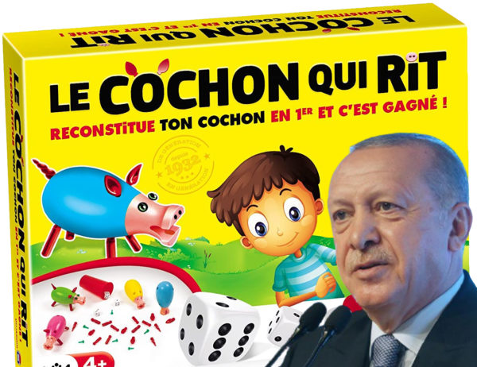
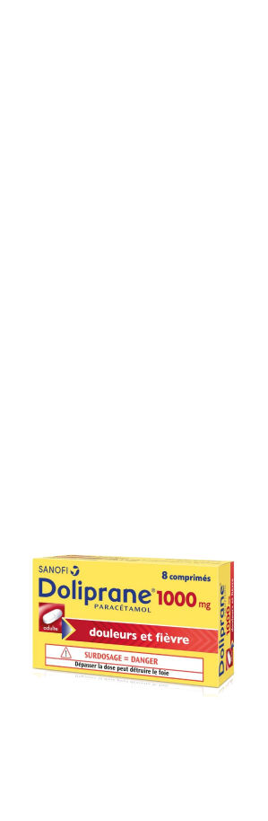

Après la vache qui rit, Erdogan appelle
au boycott du cochon qui rit
×
Après la vache qui rit, Erdogan appelle au boycott du cochon qui rit
La situation diplomatique continue de s’envenimer entre la France
et la Turquie. Le président Recep Tayyip Erdogan a appelé les Turcs
à boycotter le jeu de société le « cochon qui rit », ajoutant une
pierre aux critiques qui pleuvent sur Emmanuel Macron au Moyen-Orient.
Le Cochon qui rit est considéré comme un « classique » en France.
Le jeu a été inventé en 1932 à Lyon par Joseph Michel qui s’est inspiré
d’un jeu pratiqué dans les bistrots. Il a été primé au concours Lépine
en 1934. Les premières versions du jeu étaient en bois. Après guerre,
les pièces du jeu fabriqué par les établissements Michel à Montluel dans
l’Ain passèrent en plastique. Les Établissements Michel ont proposé des
variantes du Cochon qui rit, comme l’Autokiri où il fallait reconstituer
de petites voitures. La société Dujardin (aussi éditeur du Mille Bornes)
a racheté la marque Le Cochon qui rit fin 2009
Cyril Hanouna devient Premier ministre
et président de l’assemblée nationale
×
Cyril Hanouna devient Premier ministre
et président de l’assemblée nationale
Ayant fait ses preuves avec une dizaine de chroniqueurs,
Cyril Hanouna devient désormais le patron des 577 chroniqueurs
de l’Assemblée Nationale. Vu le niveau actuel, le choix fut rapide.
C’est toujours sous le pseudonyme de Baba que Cyril dirigera
d’une main de maître mais bienveillante l’ensemble des chroniqueurs
du nouveau TPMP « C’est un nouveau challenge pour moi ! J’ai fait
le tour des chroniqueurs de l’ancienne formule, je m’ennuyais.
On peut même dire que j’ai poncé certaines chroniqueuses aussi
! (rire en se touchant les tétons) Là c’est un autre domaine,
ils ne me lécheront pas tous le cul. Du moins tant que je n’aurai
pas privatisé l’Assemblée Nationale. J’ai déjà des noms de prévus:
Saupiquet pour pouvoir danser les sardines tranquillement parmi
les thons (rire) ou peut-être Dragées Fuca vu qu’on va encore plus
faire chier les français ! (rire en imitant des pets avec sa bouche) »
Le trublion du PAF n’oublie pas qu’il en a certains dans le pif
« J’en connais déjà…notamment le p’tit Louis. Je vais le démouler
comme le fromage ! (rire en mimant le démoulage) Je vais me régaler,
ça va être une darka pas possible. » Et quand on lui demande ce que
vont devenir les anciens chroniqueurs, sa réponse ne se fait pas
attendre « Qui ? Non sérieux je leur ai donné un coussin à mon effigie.
S’ils le lavent régulièrement ça devrait faire le taf (rire). »
La chaîne Public Sénat est pour l’instant heureuse d’avoir perdue
la diffusion des débats de l’Assemblée Nationale « On n’arrivait plus
à suivre. Nos questions étaient trop sérieuses, nous n’avions jamais
de réponses. Du coup, nous allons rediffuser des épisodes de Derrick
en attendant un éventuel sursaut des électeurs français. Croisons les
doigts. »


Un chat équipé d'une caméra :
Agent du Hamas ?

Xavier Dupont de Ligonnès :
Un nouveau rebondissement
×
« L’armée israélienne déclare avoir capturé un agent secret paléstinien :
un chat équipé de micro-caméras. »
Dans une histoire digne d’un film d’espionnage, l’armée israélienne
a récemment déclaré avoir capturé un agent secret plutôt inattendu
: un chat équipé de micro-caméras. Cette incroyable révélation a
secoué les médias du monde entier et a suscité l’émerveillement de
nombreux observateurs. Découvrons ensemble comment un simple félin
est devenu un redoutable espion au service de la cause palestinienne.
L’histoire du chat espion palestinien commence dans les rues animées
de Gaza, où ce félin astucieux a été recruté par des militants
palestiniens pour mener des opérations de surveillance en territoire
israélien. Grâce à sa discrétion naturelle et à sa capacité à se
faufiler partout, le chat a pu recueillir des informations précieuses
sans éveiller les soupçons des autorités israéliennes.
×
Le corps d’Alexeï Navalny est en réalité celui de Xavier Dupont de Ligonnès
Nouveau rebondissement dans le multivers improbable actuel:
le corps quasiment rendu à la famille Navalny est celui de
Xavier Dupont de Ligonnès.
Les experts dépêchés sur place en télétravail ont pu regarder
le corps en détail via webcam « Aucun doute possible, il a une
tête, 2 bras, 2 mains et 2 jambes tout comme Xavier Dupont de Ligonnès.
Bon, c’est un peu dans le désordre mais on va dire que c’est lui. »
Le corps devrait rapidement être rendu à la France même si sa femme,
Agnès, n’a toujours pas demandé son rapatriement.